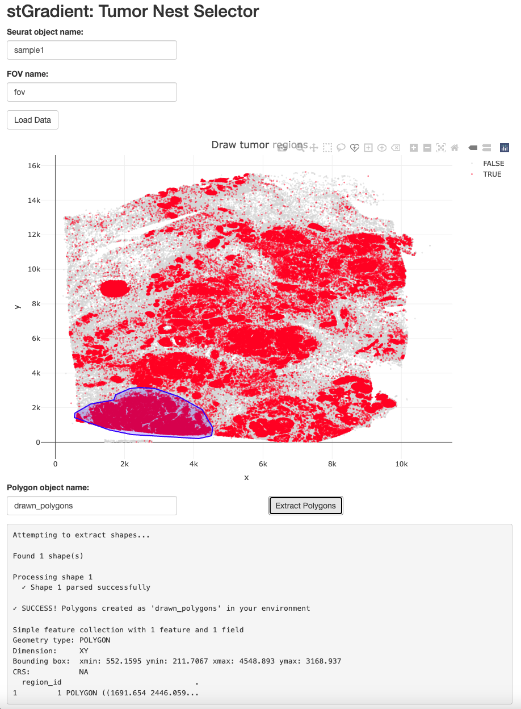
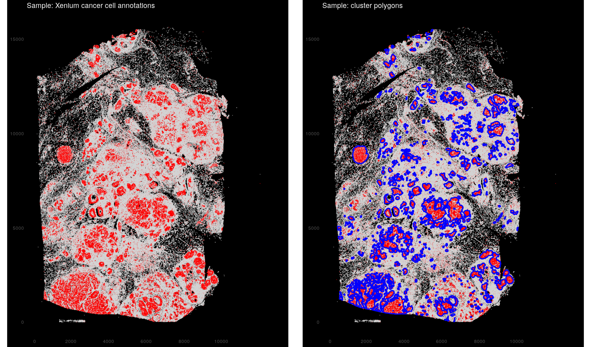
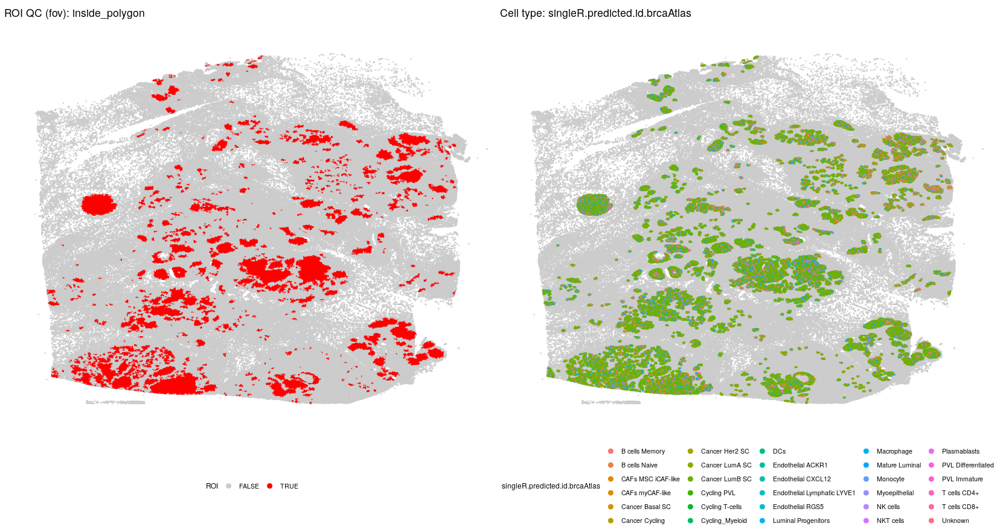
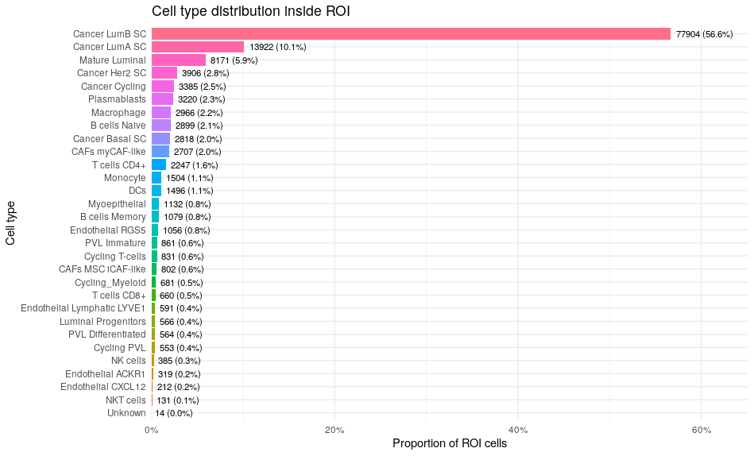
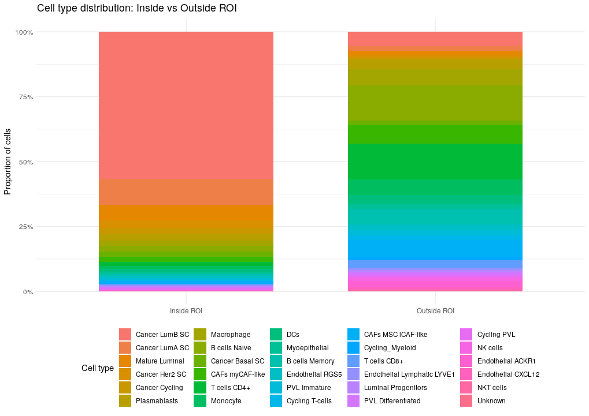
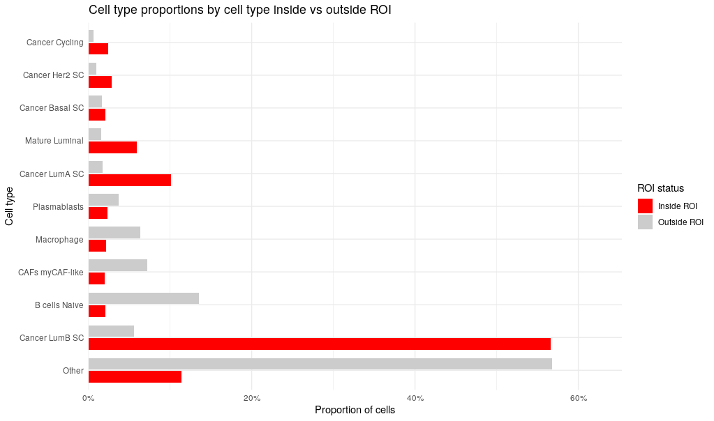

Region Selection
region-selection.RmdIntroduction
stGradient provides two approaches for defining tumor regions:
- Interactive selection via the Shiny app
- Automated detection using DBSCAN clustering
Launching the Interactive Polygon Selector
The Shiny app allows you to interactively draw polygons on spatial data to define tumor regions:
Workflow in the App
- Enter your Seurat object name — the name of the object in your R session
-
Enter FOV name — the field of view name (typically
"fov") - Click “Load Data” — loads cell coordinates and plots them
- Draw polygons — use the freehand drawing toolbar on the plot
- Enter polygon object name — name for the extracted polygon object
- Click “Extract Polygons” — saves polygons to your global environment
The resulting polygon object is an sf object that can be
passed directly to downstream stGradient functions.

DBSCAN-Based Polygon Detection
The add_dbscan_polygons() function automatically
identifies tumor regions by clustering cancer-labeled cells using the
DBSCAN algorithm, then wrapping detected clusters in concave hull
polygons.
library(stGradient)
# One-step: detect polygons and add membership to Seurat object
seurat_obj <- add_dbscan_polygons(seurat_obj)
# Access the polygon object
auto_polygons <- seurat_obj@images[["fov"]]@boundaries$cancer_regionsCustomizing DBSCAN Parameters
You can tune the clustering behavior:
seurat_obj <- add_dbscan_polygons(
seurat_obj,
eps = 35, # neighborhood radius (microns)
minPts = 20, # minimum cluster size
concavity = 2 # concave hull tightness (lower = tighter)
)Visualizing Detected Polygons
Use plot_dbscan_polygons() to inspect the results before
proceeding:
# Plot with polygons overlaid
plot_dbscan_polygons(seurat_obj)
# Get polygons without plotting (useful for pipelines)
auto_polygons <- plot_dbscan_polygons(seurat_obj, plot = FALSE)
Optimizing DBSCAN Parameters
If you’re unsure which eps and minPts
values work best for your data, use
optimize_dbscan_params() to perform a grid search evaluated
by silhouette score:
# Search over a grid of eps and minPts values
results <- optimize_dbscan_params(seurat_obj)
# View top parameter combinations
head(results)
# Use the best parameters
best <- results[1, ]
seurat_obj <- add_dbscan_polygons(seurat_obj, eps = best$eps, minPts = best$minPts)You can customize the search ranges:
results <- optimize_dbscan_params(
seurat_obj,
eps_range = seq(20, 80, by = 10),
minPts_range = c(15, 20, 30, 50),
max_sample = 30000 # reduce for faster computation
)Adding Polygon Membership
Once you have polygons (from either the Shiny app or DBSCAN), annotate each cell as inside or outside:
# Add inside/outside metadata column
seurat_obj <- add_polygon_membership(seurat_obj, auto_polygons)This adds an inside_polygon column to
seurat_obj@meta.data with logical values.
QC Visualization
After assigning membership, use qc_plot_xenium() to
visualize the spatial layout:
qc_out <- qc_plot_xenium(
obj = seurat_obj,
roi_col = "inside_polygon",
celltype_col = "singleR.predicted.id.brcaAtlas",
show = "both",
zoom = TRUE,
zoom_pad = 0.05,
grey_outside_roi = TRUE
)
qc_out$p
ROI Composition Plots
Examine cell type distributions inside vs. outside the region:
# Distribution inside ROI only
plot_roi_celltype_dist(
df = qc_out$df,
roi_col = "inside_polygon",
celltype_col = "singleR.predicted.id.brcaAtlas",
metric = "proportion"
)
# Stacked inside vs outside
plot_roi_inout_celltype_stack(
df = qc_out$df,
roi_col = "inside_polygon",
celltype_col = "singleR.predicted.id.brcaAtlas"
)
#Dodged inside vs outside
plot_roi_inout_celltype_dodge(
df = qc_out$df,
roi_col = "inside_polygon",
celltype_col = "singleR.predicted.id.brcaAtlas",
metric = "count",
top_n = 10
)
Next Steps
With regions defined and membership assigned, proceed to Distance Metrics to calculate boundary distances and separation metrics.